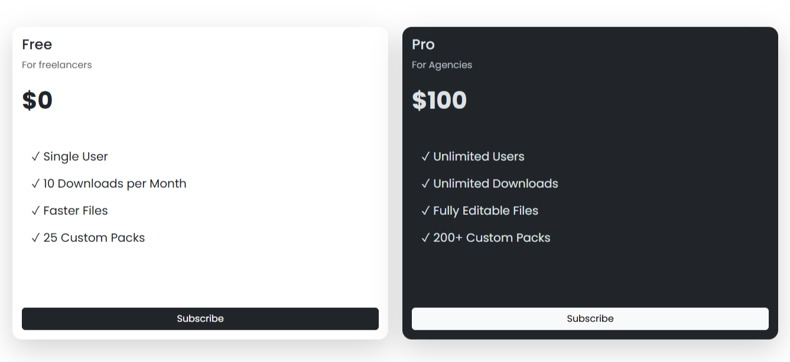
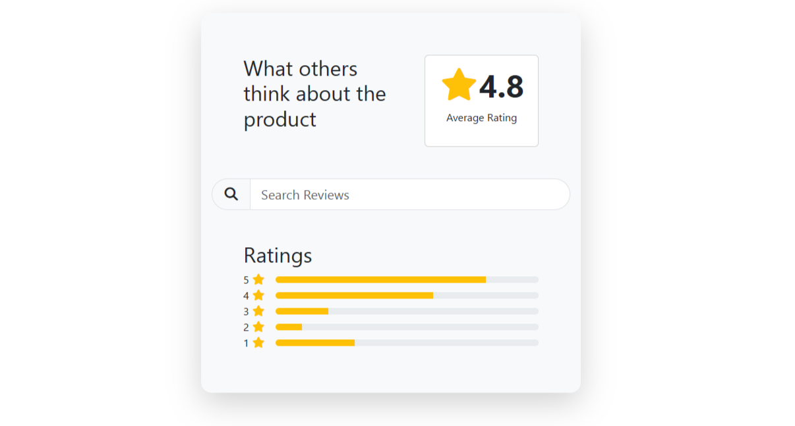

About
Hi! My name is Radaporn Doopong, and I am a first-year Computer Science student at Thammasat University. I created this portfolio to share my learning journey, the website I built, and what I learned from this project. Through this experience, I got to explore HTML and CSS and improve my basic web development skills.
My Portfolio
Course Assignment : CS100_Pricingcards
- Title: My First Learning Portfolio

Course Assignment : CS100_Ratingcomponent

What I build
I built a simple learning portfolio web using HTML and CSS. It includes information about me, my learning experience, and what I learned from this project. I designed the website to be simple, clean, and easy to read. When I opened the website in a browser, the browser acted as the client and loaded my HTML and CSS files.
In this project, the browser acted as the client because it requested and displayed the HTML and CSS files. I did not create a server-side component for this project.
- Tools I used for making this webpage
I used this website to explore and choose a color palette for my portfolio. I selected colors that matched the style I wanted and used them for the background, text, and other elements of my website. Visit Color Hunt
How I build it
I started by planning what information I wanted to include on my website. Then, I created the structure using HTML and used CSS to design the layout, colors, fonts, and spacing. I also added images and links to make the website more interesting. I tested the website in a browser and fixed some small problems along the way.
I used HTML and CSS tutorials from W3Schools and used ChatGPT to help me understand some HTML and CSS commands when I had problems.
Reflection
This project helped me understand the basics of web development and improve my HTML and CSS skills. I learned how to organize content and design a webpage more effectively.
Although I had some difficulties with the layout and CSS, I used ChatGPT to understand the commands I needed and W3Schools to learn how to arrange different HTML and CSS elements.
If I could improve this website in the future, I would improve the layout and make the website more responsive on different screen sizes because I want the website to be easier to use on both computers and mobile devices.
Visit W3Schools